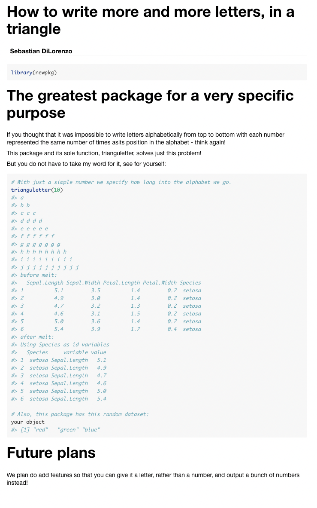

R packages
RaukR 2022 • Advanced R for Bioinformatics
Sebastian DiLorenzo

This is the R packages exercise from RaukR. It will take you through creating an R package with code, data, documentation, creating or generating a correct DESCRIPTION and NAMESPACE, importing packages, checking your package for warnings. There are also some advanced excercises you can do if you have time.
The exercise will show how do to things from R console, but many of the functionalities are so common they are built into Rstudio. Because of this I have included a cheatsheet which can be useful if you are developing packages in Rstudio in the future.
It is fine if you do not have time for the whole thing, as all components may not be important to you. You can always come back later :).
1 Cheatsheet
| command | description | Rstudio_windows | Rstudio_mac |
|---|---|---|---|
| usethis::create_package() | Create a package backbone. | File > New Project > New Directory > R package | File > New Project > New Directory > R package |
| usethis::use_r() | Create or open a file in R/ for editing. | NA | NA |
| devtools::load_all() | Simulates building, installing and attaching a development package. | CTRL+SHIFT+L | CMD+SHIFT+L |
| usethis::use_data() | Creates a .rda file in data/ containing the object. The file has the same name as the object. | NA | NA |
| devtools::document() | Create .Rd files from roxygen2 function comments. Generate NAMESPACE. | CTRL+SHIFT+D | CMD+SHIFT+D |
| devtools::use_package() | Add package to Imports field of DESCRIPTION. | NA | NA |
| devtools::check() | Run R CMD check on your development package from within R. Also performs bundling and other checks. | NA | NA |
2 Installing dependencies
The first thing we want to do is install the dependencies required for the exercise.
install.packages(c("devtools","usethis","roxygen2", "knitr", "rmarkdown", "reshape2", "Rcpp"))If you haven’t already, install Rstudio.
3 Create a package backbone
First of all we will create the standard files that are required in an R package.
usethis::create_package("path/to/your/package/packagename")If you execute this command from within Rstudio, it should open a new instance of Rstudio located within your newly created package. If you didn’t and want to work on your package in Rstudio, double click the .Rproj file or select it from Rstudio.
Take a look at the “Files” pane of Rstudio to see what create_package() actually created for you.
4 Insert wondrous things
Now that we have a R package backbone lets fill it with stuff!
4.1 R code
Let’s create the first function of your package. We can use the handy helper-function usethis::use_r() to create or navigate between the r files in your R/ folder. You can also just create a .R file there if you wish.
usethis::use_r("trianguletter")This should create and open the file R/trianguletter.R for editing.
Feel free to rewrite the function to perform some simple task. From adding two numbers to creating a basic plot from some input. It’s up to you!
Here is an example that I threw together:
trianguletter <- function(x) {
for(i in 1:x){
cat(rep( letters[i], times = i),"\n")
}
}When you are happy with your function, save it. To access and test your newly created function we have to attach it to make it available. But rather than bundle, install and attach we can use the function devtools::load_all() while developing the package. load_all() simulates the behaviour of bundling, installing and attaching the package, without actually having to do it.
Now test your function in the console!
trianguletter(12)## a
## b b
## c c c
## d d d d
## e e e e e
## f f f f f f
## g g g g g g g
## h h h h h h h h
## i i i i i i i i i
## j j j j j j j j j j
## k k k k k k k k k k k
## l l l l l l l l l l l lCongratulations! You have just created an R package that fulfills a function!
4.2 Data
Lets add some data to our package, create an R object with whatever information you want. A string, a vector or a data.frame, as long as you recognize it, it doesn’t matter. First we will save it to our data/ folder using usethis::use_data().
# A random object
your_object <- c('red','green','blue')
#Save to data
usethis::use_data(your_object)This created the data/ folder and your_object.rda inside it.
Now when our package is loaded, your_object will be made available to the user. To test this, remove all objects from your working directory, and load all functions. Check that you can access the object, despite just removing it from your workspace.
# Clear workspace
rm(list=ls())
# Load all functions and data from our package
devtools::load_all()
# Check if we can access our saved object
your_object
[1] "red" "green" "blue"The data in data/ folder is available to the user, needs to be documented, and is where you would store data if the purpose of your package is to distribute one or more datasets in an R friendly way. If there is some data that you don’t want to make easily accessible to the users, AKA not document, but that your functions use, you can put it in sysdata.rda. Lets create a second object. Like the last one it does not matter what it is. Use the same command as before to save the object, except this time specify that this data is intended for internal use.
# Create a second object
second_object <- "It works!"
# Save it to R/sysdata.rda
usethis::use_data(second_object, internal = TRUE)To check that this worked, clear your workspace and edit your packages function, the .R file, to include the object in some way. Load the package and see if it executes as expected.
# Clear workspace
rm(list=ls())# Example .R code edit
trianguletter <- function(x) {
for(i in 1:x){
cat(rep( letters[i], times = i),"\n")
}
# Check if second object can be called by our function
cat(second_object)
}# Load all functions and data from our package
devtools::load_all()# Test the function
trianguletter(5)## a
## b b
## c c c
## d d d d
## e e e e e
## It works!Great work! You have created external and internal datasets and shown that they can be used when your package is loaded in the console and in your packages own functions!
4.3 Documentation
Now that we have a function and a dataset, lets use roxygen2 to create some documentation for them.
4.3.1 Function documentation
As was discussed in the presentation, the roxygen2 documentation for a function is directly before it in so called “comment blocks”, or #'. Here is a brief refresher:
- Comment block :
#' - Tags :
@tagname@param: parameter@example: examples@return: what does the function return. The value field in R documentation@section: create any section you want@export: export the function so it can be used externally
Go ahead and create documentation for your function. Add at least a title, a description, multi-section details, the parameters, the expected return value or output, an example of how to use your function and the export tag.
Note: The @export tag should always be last in documentation and grants the user access to the function. It is very important, if you want the user to be able to call the function. For internal functions, this may not be the case.
An example functional documentation:
#' A right sided triangle of alphabetic letters
#'
#' A right sided triangle of alphabetic letters
#'
#' This function takes a number as input and outputs an increasing
#' number of alphabetic letters on top of eachother, resembling
#' a right sided triangle.
#' @section Warning:
#' Not tested for numbers over 26!
#'
#' @param x A number.
#' @return Outputs to console. NULL object returned.
#' @examples
#' trianguletter(10)
#' @export
trianguletter <- function(x) {
for(i in 1:x){
cat(rep( letters[i], times = i),"\n")
}
# Check if second object can be called by our function
cat(second_object)
}When you are satisfied with your documentation, build it using devtools::document(). This creates the .Rd file in man/ which is parsed by R when you request the functions documentation. Additionally, the first time you build documentation it will make some edits to your DESCRIPTION and check on your NAMESPACE.
Note: You may have gotten a warning message that your NAMESPACE was not generated by roxygen2. This is good behaviour by roxygen2, it doesn’t want to change something the user has created a certain way. In this case however, we want the NAMESPACE to be handled by roxygen2, so delete the NAMESPACE file and run
devtools::document()again to have roxygen2 create it.
Go ahead and preview your function as you would any method and make sure that it looks the way you were expecting.
?trianguletter
4.3.2 Data documentation
Data documentation is a bit different from functional documentation. Remember that you do not need to document datasets not intended for users, so don’t worry about sysdata.rda. What we want to document in this case is the data you created in man/your_object.rda, or whichever name you have given it.
The principle is very similar to functional documentation, but not all tags that are applicable to functions are applicable to data, and should not be used. Similarly, there are some tags that are applicable to data, but not to functions. Usually this is the information you would give a dataset:
- Data documentation
- Title
- Description
@format: what rows and variables are in the data?@source: where is the data from?
First of all, lets check what the output of requesting help for your dataset is currently.
?your_object## No documentation for 'your_object' in specified packages and libraries:
## you could try '??your_object'As expected, it is undocumented. Since we cannot add this information to the dataset file, your_object.rda, like we did with the functions documentation, lets create an R file in R/ called data.R and add the documentation there. The name we document has to be the same name as the dataset object you created earlier. Go ahead and document your dataset now.
#' A vector with three strings
#'
#' A dataset containing three strings usually linked to the
#' colors of pixels on a screen.
#'
#' @format A vector with three strings:
#' \describe{
#' \item{red}{A string, it's red.}
#' \item{green}{A string, it's green. Street talk for money.}
#' \item{blue}{A string, really didn't see that coming. It's blue this time!}
#' }
#' @source \url{http://www.themindofsebastian.com}
"your_object"Once you are happy with your documentation, save the file and run devtools::document(). Now check the help page for your dataset again.
?your_object
Well done! You have successfully created documentation for a function and a dataset and shown that it can be queried within R.
4.4 DESCRIPTION
Now lets take a look at our DESCRIPTION file, at this point it should look similar to this:
Package: newpkg
Title: What the Package Does (One Line, Title Case)
Version: 0.0.0.9000
Authors@R:
person("First", "Last", , "first.last@example.com", role = c("aut", "cre"),
comment = c(ORCID = "YOUR-ORCID-ID"))
Description: What the package does (one paragraph).
License: `use_mit_license()`, `use_gpl3_license()` or friends to pick a
license
Encoding: UTF-8
Roxygen: list(markdown = TRUE)
RoxygenNote: 7.2.0
Depends:
R (>= 2.10)
LazyData: trueNote: The information can look slightly different depending on how the package was created.
Looks pretty good but some information definitely needs to be updated if you are ever going to submit this to a repository.
Update the Title, Author and Description fields.
When it comes to the License field, Just in case you don’t want to consider which license to give your package, why not choose one of the most common ones that were mentioned during the lecture?
- MIT : Free, but your license must be included in any following work.
- GPL-3 : Even more free. If someone uses your code, whatever they are doing must also be GPL compatible.
- CC0 : Totally free.
One good way of adding the license is not to just update the DESCRIPTION, but to use a function such as use_mit_license(). It not only updates your DESCRIPTION, but also adds the file LICENSE and LICENSE.md to your package, with relevant license information.
A good place to look at the meaning of licenses is https://tldrlegal.com.
Now that your DESCRIPTION is up to shape, we can move on to the NAMESPACE.
4.5 NAMESPACE
Roxygen2 made our function available to the users in our NAMESPACE and made sure that our package works well with other packages. Basically, you should almost never be editing your NAMESPACE by hand.
4.5.1 Import
First, lets import a function from a package and add its functionality to the function we created. This is very handy for using functions from other packages in your package and for making sure your package uses only that function when it is called, no matter the users environment.
- Create a new file called R/utility.R. We won’t actually put any internal utility functions there, but this is a typical place where you would import functions from other packages.
- Next add code to import the
meltfunction fromreshape2. This is in the form@importFrom pkg function. Since this kind of documentation has to precede a function or object, we will give it the NULL object, by convention.
#' @importFrom reshape2 melt
NULLTo update the NAMESPACE run devtools::document().
Now your NAMESPACE should look like this:
# Generated by roxygen2: do not edit by hand
export(trianguletter)
importFrom(reshape2,melt)Great! If the melt command from reshape2 is ever used in your package, it will know which one to use. But for our package to use reshape2 we first have to import it in DESCRIPTION.
To add the Imports field and the reshape2 information to your DESCRIPTION you can use the devtools::use_package command.
devtools::use_package("reshape2")While Imports means that if someone installs your package it will automatically install reshape2 as well, regrettably it does not mean that if reshape2 is missing when we reinstall it locally it will be downloaded and installed. Luckily we installed it at the start of the exercise.
4.5.2 Testing the imported function
Now that we have added melt from reshape2 lets add it to our function. You can do this any way you like, or copy usage from the example function.
In this example the head of iris dataset before and after melt is viewed, to see that it had an effect.
#' A right sided triangle of alphabetic letters
#'
#' A right sided triangle of alphabetic letters
#'
#' This function takes a number as input and outputs an increasing
#' number of alphabetic letters on top of eachother, resembling
#' a right sided triangle.
#' @section Warning:
#' Not tested for numbers over 26!
#'
#' @param x A number.
#' @return Outputs to console. NULL object returned.
#' @examples
#' trianguletter(10)
#' @export
trianguletter <- function(x) {
for(i in 1:x){
cat(rep( letters[i], times = i),"\n")
}
# Check if second object can be called by our function
#cat(second_object)
#what iris dataset looks like
cat("before melt:\n")
print(head(iris))
#Use melt and see what it looks like
cat("after melt:\n")
print(head(melt(iris)))
}Use devtools::load_all() to reload your package and it’s imports. You can check that reshape2 was also loaded with sessionInfo().
Test your function, does the output show that it can use melt?
Now, lets check that the NAMESPACE is doing what we want it to do, making sure that the correct melt is being used by our package. Lets define a new function, also named melt, in our global environment. That is to say we just define it from the R console.
melt <- function(x) {
cat("abc",x)}Now try your function again. Is it using the correct melt?
It should be!
Try using melt(iris) in your R console, as it is used in your packages function. It should not work. This is because it is using the melt function you just defined, and it is getting in the way of using the correct function!
Note: An alternative way of achieving the behaviour of a correct NAMESPACE is writing your code with strict package references. In our case
reshape2::melt(). This way you can circumvent usingroxygen2to add import tags toNAMESPACEif you want. I recommend doing both =).
5 Checking your package
Now that we have a pretty complete package, lets run some checks on it. You can use the standard R CMD check pkgname from your terminal, or you can use devtools::check(), which we recommend, as it performs some additional operations such as updating the documentation and bundling the package before checking.
── R CMD check results ───────────────────────────────── newpkg 0.0.0.9000 ────
Duration: 18.1s
❯ checking R code for possible problems ... NOTE
trianguletter: no visible global function definition for ‘head’
trianguletter: no visible binding for global variable ‘iris’
Undefined global functions or variables:
head iris
Consider adding
importFrom("datasets", "iris")
importFrom("utils", "head")
to your NAMESPACE file.
0 errors ✔ | 0 warnings ✔ | 1 note ✖Did you get any NOTEs, ERRORs or WARNINGs? I know I did! Among other things it didn’t like my usage of the iris dataset without specifying it in the NAMESPACE. This one is a bit tricky, but you can try to solve it if you want.
6 Finish line

Well done! You have built a functional package. Maybe it is even time to update the version number in DESCRIPTION and take it out of development?
If you want to know even more about this topic, I recommend Hadley Wickham and Jenny Bryans excellent online resource http://r-pkgs.had.co.nz/check.html
The next sections are optional and cover vignettes, testing, including C++ code in your package using Rcpp and pushing your R package to github and setting up github actions for it.
7 Vignette
Vignettes are long-form documentation for your package. Like a manual detailing what the purpose of your package and its functions are. To initialise your vignette, you can use the command:
usethis::use_vignette("packagename_vignette")What this does:
- Creates the vignettes/ folder with packagename_vignette.Rmd inside
- Edits your DESCRIPTION, adding
knitrtoSuggestsand as aVignetteBuilder.
Open the file vignettes/packagename_vignette.Rmd, unless it was already automatically opened when using the command. Edit the header data, change title and add an author, then create a minimal vignette for your function. Do run your function and show your dataset using knitr from the vignette. It can be as short as you want, however if you do this for a real package it should be a long form manual showing how your package can use its functions or data to perform the task it was designed for.
Note: To be able to use the functions of your package in the vignette you will need to install your package, the easiest way is to execute
devtools::install().
To preview your vignette while working on it, press the knit button in Rstudio.
Example vignette.Rmd:
---
title: "How to write more and more letters, in a triangle"
author: "Sebastian DiLorenzo"
date: "`r Sys.Date()`"
output: rmarkdown::html_vignette
vignette: >
%\VignetteIndexEntry{How to write more and more letters, in a triangle}
%\VignetteEngine{knitr::rmarkdown}
%\VignetteEncoding{UTF-8}
---
\```{r setup, include = FALSE}
knitr::opts_chunk$set(
collapse = TRUE,
comment = "#>"
)
# replace this with your package name
library(newpkg)
\```
# The greatest package for a very specific purpose
If you thought that it was impossible to write letters
alphabetically from top to bottom with each number represented
the same number of times asits position in the alphabet
- think again!
This package and its sole function, trianguletter, solves just this problem!
But you do not have to take my word for it, see for yourself:
\```{r,echo=T}
# With just a simple number we specify how long into the alphabet we go.
trianguletter(10)
# Also, this package has this random dataset:
your_object
\```
# Future plans
We plan do add features so that you can give it
a letter, rather than a number, and output a
bunch of numbers instead!Note: Because I am writing this in rmarkdown I added backslashes before the code or it would not render properly for this exercise instruction. In your rmarkdown there should not be backslashes before code chunks. See the \``` in the vignette code.
And the beautiful rendered version:

The preview you get when knitting the vignette.Rmd does not mean that the vignette has been created. When you are happy with the vignette, use devtools::build_vignettes(). To view the vignette as an external user would view it is for some reason a bit of a hassle for the package you are developing, perhaps because the output is pretty much the same as when you knit. If you want to do this you can build your package source with devtools::build(), which also builds the vignette, and then devtools::load_all(). Then view the vignette with browseVignettes("packagename").
Once again, good work! Now you have written a short guide to your package that will be included wherever it goes!
8 src/ and Rcpp
R is not always the most efficient language, which is why it is great that we can integrate other code with our package. Either using ready made solutions, or by including a script file of another language in the package.
Here we will integrate the well developed Rcpp package to be able to use C++ code in our package.
Similarly to how we created the package, the first thing we want to do is setup our package to accept Rcpp. We can do this with usethis::use_rcpp() which does four things:
- Creates src/ folder, unless it already exists.
- Edits DESCRIPTION, adding
RcpptoImportsandLinkingTo. - Create and modify .gitignore to not include compiled files (useful if you connect your package to git)
- Let’s you know two roxygen tags that need to be included, like our documentation, somewhere in package.
Note: Some users have reported receiving some warnings when executing
usethis::use_rcpp()but it didn’t seem to break anything.
usethis::use_rcpp()Lets include the roxygen tags in our utility.R file.
#' @useDynLib newpkg, .registration = TRUE
#' @importFrom Rcpp sourceCpp
NULLNow we are ready to create a C++ file. You can do this from Rstudio to generate a nice template, File > New file > C++ File. It should look something like this:
#include <Rcpp.h>
using namespace Rcpp;
// This is a simple example of exporting a C++ function to R. You can
// source this function into an R session using the Rcpp::sourceCpp
// function (or via the Source button on the editor toolbar). Learn
// more about Rcpp at:
//
// http://www.rcpp.org/
// http://adv-r.had.co.nz/Rcpp.html
// http://gallery.rcpp.org/
//
// [[Rcpp::export]]
NumericVector timesTwo(NumericVector x) {
return x * 2;
}
// You can include R code blocks in C++ files processed with sourceCpp
// (useful for testing and development). The R code will be automatically
// run after the compilation.
//
/*** R
timesTwo(42)
*/You should not mess with the header, unless you know what you are doing. Here you can write any C++ function you want, either do this or leave it as it is and we will use the included example function, timesTwo. The function is exported to R using // [[Rcpp::export]]. Importantly, this does not add the function to your NAMESPACE. Add documentation to your function in the same way as we have done previously, but with the C++ commenting style of //'.
//' Multiply a number by two
//'
//' @param x A integer.
//' @export
// [[Rcpp::export]]
NumericVector timesTwo(NumericVector x) {
return x * 2;
}Save the file to your src/ directory and call pkgbuild::compile_dll(), which re-compiles the package, implementing our changes. Now run devtools::document() to update your NAMESPACE. Lets install and restart using Cmd/Ctrl + Shift + B in Rstudio. This will create the file RcppExports.R in R/, which is what R uses to call your C++ function.
Test that your function works from console.
Your R package can now run C++ code, marvelous! Now you just need to learn C++ ;).
8.1 Check again!
Added new components to the package have we? - Yoda
Perform devtools::check() again and fix any new messages.
9 Github and Github actions
This section does require some previous git knowledge.
9.1 Github
Let’s add our R package to github, so we can distribute it! To do this you will need a github account. Since git usage is covered later in the course, you can return to this. But if you want you are very welcome to follow this guide. It does require that you have git installed, accessible and configured on your local computer.
To initialize git for your R package, so it becomes a local repository, you first need to run the command:
usethis::use_git()To initialize a new github repository with the same name as your R package and push your files there, you can use this command:
usethis::use_github()At this point, you should have a new repository on your github that has your R package files inside it. This is fantastic! Not only does this mean you can now install your package from any other computer , but we can also setup github actions!
Check that you can install your package directly from the github repository using a command of the form devtools::install_github("Username/repository_name").
9.2 Github actions
Note: Github actions are only free for public repositories. Do not create a private repository, for example under your organisation, for this exercise!
Let’s set up our R package so that it will test if it passes R CMD CHECK on three major operating systems. The first thing you will need to do is make sure your github account can use actions/workflows. If you are using a personal access token go to (user, not repo) Settings>Developer settings>Personal access tokens on your github account and make sure you have selected a Scope called workflow.
Now lets add an action to our R-package. It is possible to do this manually but luckily there are some example workflows you can use for the most common cases at https://github.com/r-lib/actions/tree/master/examples.
To add the action, we will use the usethis package, similarly to how we used it to initiate vignettes earlier. Issue the command usethis::use_github_action("check-standard") in your R package R session, which will select the standard CI workflow from the link.
What this actually did is create the folders and file .github/workflows/check-standard.yaml which github will know to look for in a repository for instructions to run actions.
Now commit and push these newly added files to your git repository the Actions tab on github will commence running an action, checking your R package for compatibility with several operating systems, as shown below.

That is it, now you know all the most important bits about creating an R package. Go make something useful!
10 Session info
## R version 4.1.2 (2021-11-01)
## Platform: x86_64-apple-darwin17.0 (64-bit)
## Running under: macOS Big Sur 10.16
##
## Matrix products: default
## BLAS: /Library/Frameworks/R.framework/Versions/4.1/Resources/lib/libRblas.0.dylib
## LAPACK: /Library/Frameworks/R.framework/Versions/4.1/Resources/lib/libRlapack.dylib
##
## locale:
## [1] en_US.UTF-8/en_US.UTF-8/en_US.UTF-8/C/en_US.UTF-8/en_US.UTF-8
##
## attached base packages:
## [1] stats graphics grDevices utils datasets methods base
##
## other attached packages:
## [1] rmarkdown_2.14 roxygen2_7.2.0 devtools_2.4.3 usethis_2.1.6
## [5] fontawesome_0.2.2 captioner_2.2.3 bookdown_0.26 knitr_1.39
##
## loaded via a namespace (and not attached):
## [1] highr_0.9 bslib_0.3.1 compiler_4.1.2 jquerylib_0.1.4
## [5] remotes_2.4.2 prettyunits_1.1.1 tools_4.1.2 testthat_3.1.4
## [9] digest_0.6.29 pkgbuild_1.3.1 pkgload_1.2.4 jsonlite_1.8.0
## [13] evaluate_0.15 memoise_2.0.1 lifecycle_1.0.1 rlang_1.0.2
## [17] cli_3.3.0 rstudioapi_0.13 yaml_2.3.5 xfun_0.31
## [21] fastmap_1.1.0 xml2_1.3.3 withr_2.5.0 stringr_1.4.0
## [25] desc_1.4.1 fs_1.5.2 sass_0.4.1 rprojroot_2.0.3
## [29] glue_1.6.2 R6_2.5.1 processx_3.5.3 sessioninfo_1.2.2
## [33] purrr_0.3.4 callr_3.7.0 magrittr_2.0.3 ps_1.7.0
## [37] htmltools_0.5.2 ellipsis_0.3.2 stringi_1.7.6 cachem_1.0.6
## [41] crayon_1.5.1 brio_1.1.3Built on: 12-Jun-2022 at 20:16:52.
2022 • SciLifeLab • NBIS • RaukR